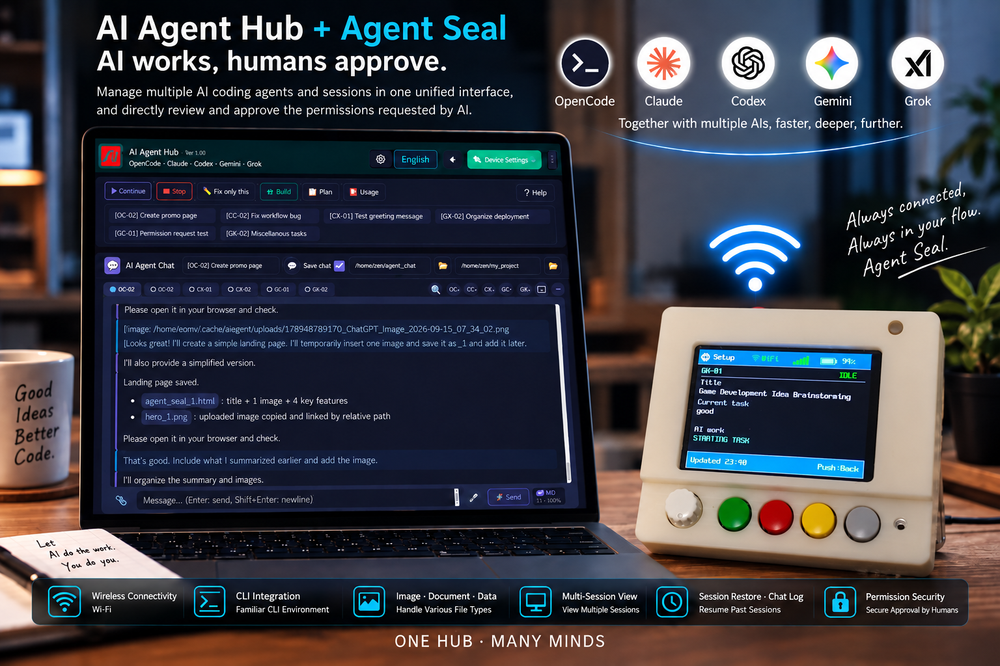

AI Agent Hub + Agent Seal
AI does the work, humans approve.
OpenCode · Claude · Codex · Gemini · Grok
Manage multiple AI coding agents and sessions in a single UI,
and review, approve, or deny AI permission requests directly in the UI or on Agent Seal.

AI Agent Hub
- Multi AI · Multi Session — Manage up to 15 sessions across multiple AIs in one UI
- CLI ↔ UI Sync — Keep using your familiar CLI while working with the same session in the UI
- Image · PDF · Text · Data Input — Send images, PDFs, text, and data directly to AI — including images via simple copy & paste
- Dual Session View — Open two active sessions side by side in real time
- Session Restore · Chat Log — Reload past sessions and reuse conversation history
Agent Seal
- Physical Permission Approval — Review AI permission requests on the LCD and approve with physical buttons
- ONCE · ALWAYS · REJECT — Choose one-time approval, always allow, or rejection
- Risk Alert — LED indicators, flashing, and buzzer alerts based on risk level
- Wireless Network — Wireless connectivity via Wi-Fi · Bluetooth
- Real-time Sync — Keep Hub sessions, AI status, and permission requests synchronized in real time
Permission Security
- Default · Security · Enhanced Security
- Set security policies for each AI — delegate the work to AI while keeping permissions under human control.